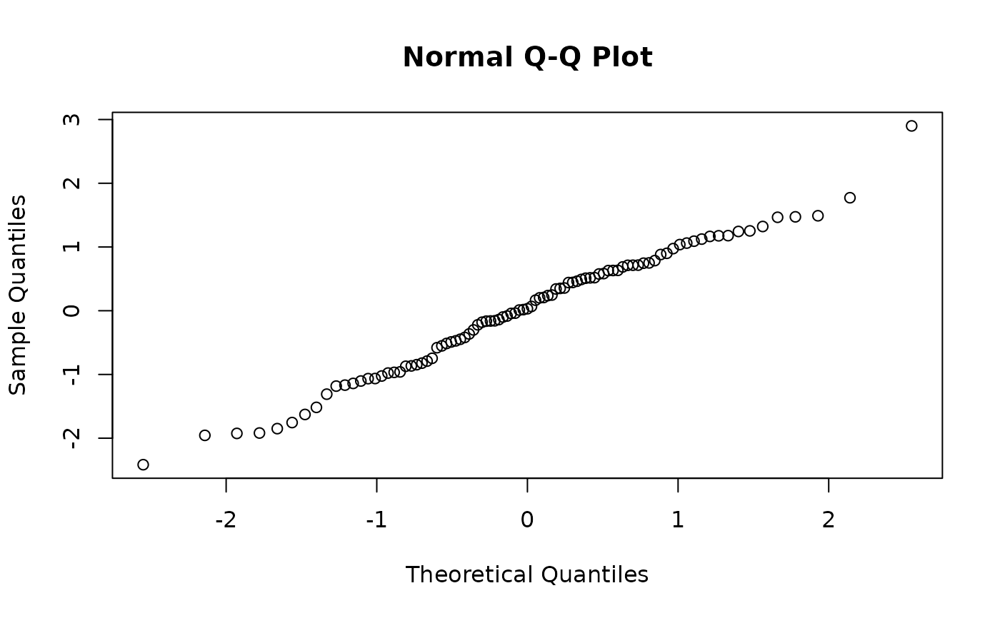

The fitted discharge at each gauging, and the residuals: the gaugings' departures from the curve.
Details
Residuals are calculated on the scale the model is fitted on: the log
scale for rc_powerlaw_log(), and discharge, in cubic meters per second,
for every other fit. Nothing is transformed back. The type of residual
is one of:
"difference": observed minus fitted, solog(observed) - log(fitted)forrc_powerlaw_log()."scaled": the difference divided by the standard deviation the fit's variance scheme gives at that stage (also known as Pearson residuals). Use these to check the variance scheme: if it is right, they spread about equally at every stage.
Examples
fit <- rc_powerlaw(discharge, stage, data = thompson, variance = "prop")
head(fitted(fit))
#> [1] 253.9909 1971.7884 429.5610 183.9161 2438.9467 2223.4346
head(residuals(fit))
#> [1] 12.009089 28.211560 21.439035 13.083899 1.053319 66.565409
# the residuals in standard deviations, to check the variance scheme
qqnorm(residuals(fit, type = "scaled"))
